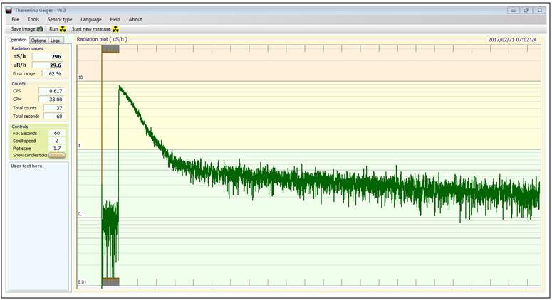
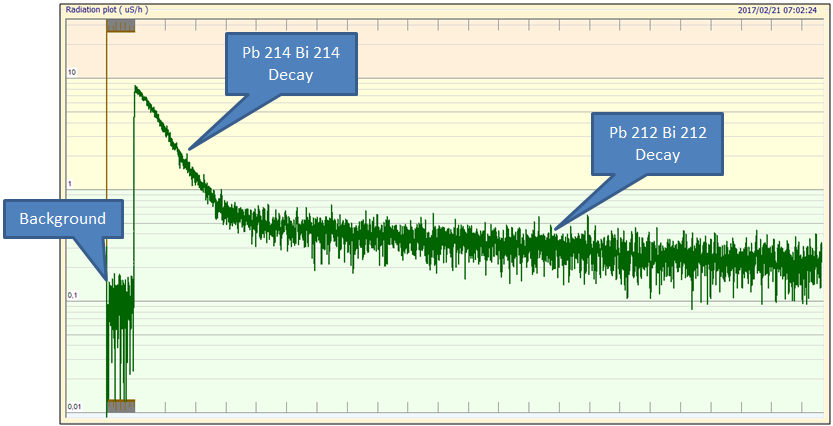

Détection du radon avec un ballon

Cette expérience a été expliquée pour la première fois par Austen et Brouwer (1997). Elle permet de démontrer que l'air contient naturellement de faibles concentrations de matières radioactives, qui se désintègrent avec le temps. Elle démontre également que notre environnement présente de faibles niveaux de radioactivité, principalement en raison du radon, un gaz auquel nous sommes exposés en permanence.
Gonflez un ballon en caoutchouc, fixez son col avec une pince et suspendez-le quelque part dans la pièce, de préférence à la cave ou au garage. Il n'est pas nécessaire de le placer en hauteur, mais vous obtiendrez généralement de meilleurs résultats en le suspendant à l'abri des courants d'air. Frottez vigoureusement le ballon pendant quelques instants avec des gants de laine jusqu'à ce qu'il soit chargé par friction. Laissez le ballon reposer environ 30 minutes, comme illustré sur la photo ci-contre.
Installez un compteur avec le tube GM. Dans l'image ci-dessous, le tube GM est placé à l'intérieur d'un puits blindé au plomb afin de diminuer le bruit de fond.
Mesurez le bruit de fond pendant environ 1 minute. Enfilez des gants jetables et prenez le ballon. Dégonflez-le en retirant le clip et placez-le dans le puits blindé en plomb.
Effectuez un comptage d'une minute pour déterminer le taux de comptage moyen sur une minute. Le résultat peut être assez étonnant : de moins de 0,1 μSv/h, l'activité monte jusqu'à environ 10 μSv/h, soit cent fois le niveau du bruit de fond ! Si le temps le permet, effectuez des comptages continus d'une minute et tracez le taux de comptage moyen en fonction du temps sur un graphique. L'image ci-dessous montre le résultat après environ 24 heures de comptage.

La cause de la contamination radioactive du ballon
La radioactivité provient des produits de désintégration du radon. Le radon provient des chaînes de désintégration de l'uranium et du thorium naturellement présents dans l'environnement. Les mesures d'Austen et Brouwer ont révélé que la majeure partie de la radioactivité était due au Pb214 et au Bi214, tous deux descendants du Rn222 (radon), et au Pb212 et Bi212, issus des descendants du Rn220 (thoron). Le Pb214 a une demi-vie de 26,8 minutes, le Bi214 de 19,7 minutes, le Pb212 de 10,6 heures et le Bi212 de 61 minutes.
Si vous enregistrez le comptage sur une minute à intervalles réguliers sans perturber le ballon et le tube GM, vous devriez obtenir un taux de comptage décroissant. La décroissance initiale est approximativement exponentielle. La courbe de décroissance initiale, principalement due à la décroissance du Pb214 et du Bi214, donne une demi-vie moyenne d'environ 50 minutes. Si l'activité du ballon est suffisante pour qu'un taux de comptage mesurable soit obtenu après 24 heures, la décroissance des descendants du Rn220, Pb212 et Bi212, prédomine, donnant une demi-vie moyenne d'environ 11 heures, comme le montrent les graphiques ci-dessous.
Une fois l'analyse terminée, jetez le ballon à la poubelle, essuyez le puits de mesure et lavez-vous les mains.

Spectroscopie gamma du ballon...
Si vous possédez un spectromètre gamma, vous pouvez effectuer une analyse spectrométrique du ballon "contaminé" afin de vérifier les isotopes présents à sa surface. Après avoir dégonflé le ballon, celui-ci est placé dans un sac plastique afin d'éviter toute contamination du capteur.
Les résultats sont présentés dans les graphiques ci-dessous. Le premier graphique a été obtenu sans compensation pour l'élargissement des raies, tandis que le second a appliqué un algorithme de compensation pour obtenir une meilleure résolution et faciliter l'identification des pics.
D'après les graphiques, il est évident que les isotopes Pb214 et Bi214 sont présents. De plus, le pic fort à 240 KeV est un signe de la présence à la fois de l'isotope Pb214 et de l'isotope Pb212. Si seul l'isotope Pb214 était présent, le pic serait beaucoup plus bas.
Conclusions
L'utilisation du ballon en caoutchouc permet, comme décrit précédemment, de réaliser de nombreuses démonstrations expérimentales à forte valeur pédagogique, telles que :
- Détection du radon;
- Mise en évidence de la désintégration nucléaire;
- Mesure de la demi-vie;
- Identification des isotopes de la chaîne de désintégration;